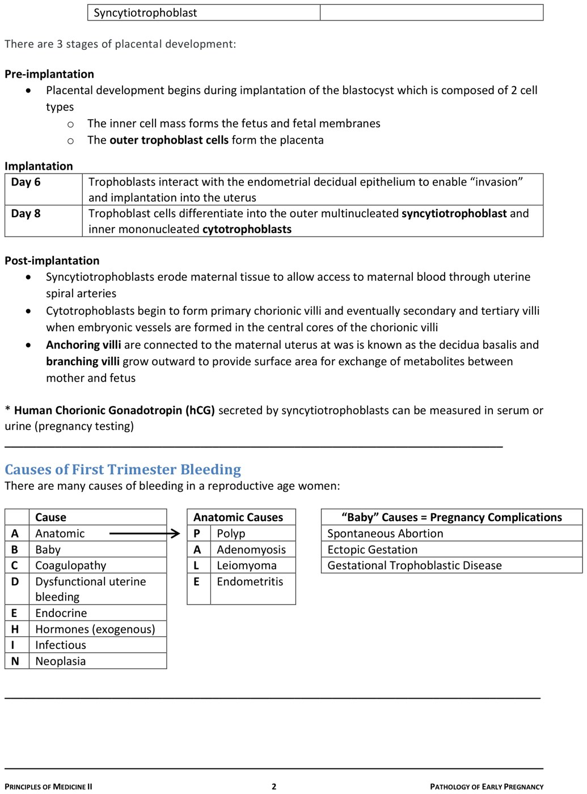
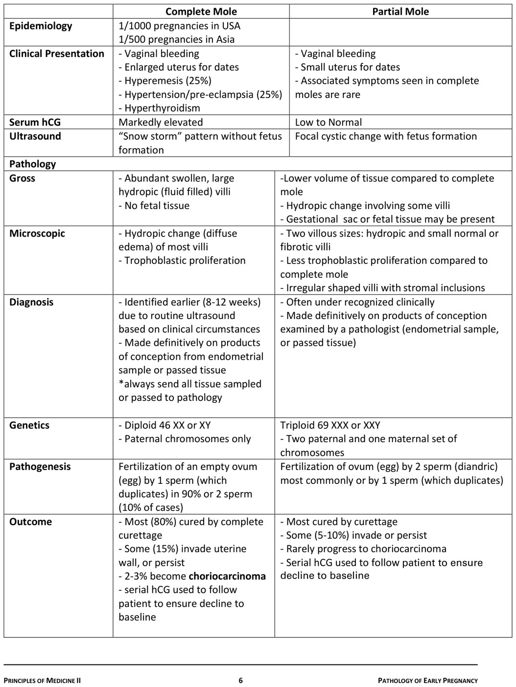
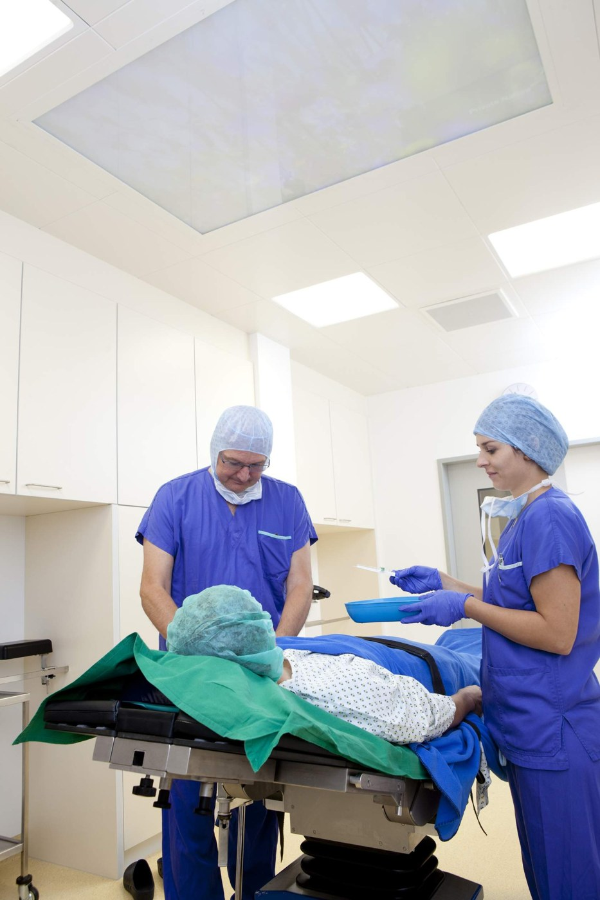

Pathology of First Trimester Bleeding
- In a reproductive-age woman, pregnancy complications are the number one cause of abnormal vaginal bleeding and must be excluded before anything else is considered.
- You must see products of conception to prove an intrauterine gestation — chorionic villi, trophoblasts, implantation site or fetal tissue. Decidualised endometrium alone does not prove it.
- Three trophoblasts: cytotrophoblast and syncytiotrophoblast on the villi, intermediate trophoblast at the implantation site. The syncytiotrophoblast makes hCG.
- The classic ectopic triad: pain + amenorrhea + adnexal mass — ectopic until proven otherwise. Commonest site is the fallopian tube; commonest risk factor is PID.
- Complete mole: 46,XX or XY, all paternal, no fetal tissue, markedly elevated hCG, "snowstorm". Partial mole: triploid 69, two paternal + one maternal sets, fetal tissue may be present, hCG low to normal.
- 2–3% of complete moles become choriocarcinoma — which is why serial hCG to baseline and no conception for a year.
- Choriocarcinoma: no villi, malignant trophoblast, haemorrhage and necrosis. >90% have lung metastases at diagnosis, yet 80% five-year survival with chemotherapy.
Learning Objectives
- Describe basic placental implantation and development.
- Develop a differential diagnosis for a woman presenting with first trimester bleeding, and summarize the causes.
- Spontaneous abortion: define spontaneous and recurrent abortion; differentiate the types; state 2 microscopic findings.
- Ectopic gestation: define it; list the risk factors; identify the most common location; describe 1 gross and 2 microscopic findings in tubal ectopic pregnancy.
- Gestational trophoblastic disease: list three types; compare complete and partial mole by clinical presentation, genetics and pathology; identify the gross and microscopic findings in choriocarcinoma; state the commonest site of metastasis.
Dr. Emily Goebel's module is 60 minutes with no recorded lecture — it is a case-based text module with images and knowledge checks.
Its spontaneous abortion and ectopic sections cover ground you already have clinically in 4.9. Rather than repeat it, this page keeps those two sections to what the pathologist adds — what the tissue looks like and what proves the diagnosis — and links back for management. Placental development and gestational trophoblastic disease are new, and are covered in full.
Dr. Emily Goebel, Pathologist, LHSC and Assistant Professor, Schulich. Images acknowledged to Dr. Michele Weir and Dr. Joanna Walsh.
Placental Implantation and Development
Five minutes of embryology that the rest of the module depends on.
How the Placenta Forms
The placenta supports the fetus by supplying nutrients, eliminating waste and enabling gas exchange via the maternal blood supply. It is composed of chorionic villi and trophoblasts.
| The three trophoblasts | Where they are |
|---|---|
| Cytotrophoblast | On the chorionic villi |
| Syncytiotrophoblast | |
| Intermediate trophoblast | At the placental implantation site |
| Stage | What happens |
|---|---|
| Pre-implantation | Development begins with implantation of the blastocyst, which has two cell types: the inner cell mass forms the fetus and fetal membranes, and the outer trophoblast cells form the placenta |
| Implantation — Day 6 | Trophoblasts interact with the endometrial decidual epithelium to enable invasion and implantation into the uterus |
| Implantation — Day 8 | Trophoblasts differentiate into the outer multinucleated syncytiotrophoblast and inner mononucleated cytotrophoblast |
| Post-implantation | Syncytiotrophoblasts erode maternal tissue to access maternal blood through the uterine spiral arteries. Cytotrophoblasts form primary chorionic villi, then secondary and tertiary villi, which carry embryonic vessels in their central cores. Anchoring villi attach to the decidua basalis; branching villi grow outward to provide surface area for metabolite exchange |
Syncytiotrophoblasts produce hCG — the hormone measured in both serum and urine pregnancy testing.
That single line connects this module to all of Thursday: it is why hCG appears at implantation (5.10), why trophoblastic proliferation in a mole drives hCG sky-high, and why serial hCG is how a mole and a choriocarcinoma are followed. Learn the cell, and the hormone follows.
Spontaneous Abortion
Case-based. The clinical management is on 4.9 — here it is the differential and the tissue.
The Differential for Bleeding in a Reproductive-Age Woman
Tai, 25, nulliparous
Abnormal vaginal bleeding and cramping. Was on the birth control pill, stopped a year ago because it made her gain weight. Sexually active with her boyfriend, condoms "most of the time". Last menstrual period 2 months ago.
Vitals stable. Abdomen soft with mild suprapubic tenderness. Pelvic exam: closed cervix, slightly enlarged uterus.

Two mnemonics nested inside each other. The alphabet runs A to N for all causes of abnormal bleeding; "A" for anatomic expands into PALE — polyp, adenomyosis, leiomyoma, endometritis; and "B" for baby is the pregnancy group — spontaneous abortion, ectopic gestation, gestational trophoblastic disease. The same framework appears in 4.10 and 4.12; age is what changes which branches are live.In a young, reproductive-age woman, pregnancy complications are the number one cause to consider and must be ruled out before anything else.
Of the whole investigation list the module offers — CBC, chest x-ray, Pap, cervical swab, clotting screen, endometrial sample, estrogen/progesterone, FSH/LH — the two that matter are serum β-hCG and pelvic ultrasound. For Tai: β-hCG positive; ultrasound shows a gestational sac in the endometrial cavity but no fetal heartbeat.
Spontaneous Abortion — Definitions and Types
Spontaneous abortion: loss of a gestation prior to fetal extrauterine viability (< 20 weeks). It accounts for 15% of known pregnancies — underestimated, because very early losses go unrecognised.
![Page from the module notes with a table categorising spontaneous abortion by vaginal bleeding, cervical os and passage of products of conception: threatened has bleeding, closed os, no passage; inevitable has bleeding, open os, no passage; incomplete has bleeding, open os, passage and may require D and C; complete has bleeding, closed os, passage; missed may or may not have bleeding, open os, no passage; and recurrent abortion is three or more spontaneous abortions requiring work-up and referral to medical genetics. Above it are clinical features and a table of fetal and maternal causes.](../../../../assets/images/week-5/early-pregnancy-pathology/spontaneous-abortion-types.jpg) Three columns decide the type: is there bleeding, is the cervical os open or closed, and have products of conception passed. Incomplete may need a D&C for retained products. Recurrent = 3 or more, and earns a work-up plus referral to medical genetics.
Three columns decide the type: is there bleeding, is the cervical os open or closed, and have products of conception passed. Incomplete may need a D&C for retained products. Recurrent = 3 or more, and earns a work-up plus referral to medical genetics.
Clinical features: abnormal bleeding · prior secondary amenorrhea, or light period · abdominal cramping · passage of blood clot and/or tissue.
| Fetal causes | Maternal causes |
|---|---|
| Chromosomal and/or congenital abnormalities — the #1 cause | Poor implantation (structural) |
| Infection (TORCH) | Chronic disease · endocrine abnormality · infection · inflammation |
In most cases the cause is unknown. The commonest cause of first-trimester bleeding overall is spontaneous abortion.
Tai passes tissue five days later. Histologic examination of uterine contents — whether passed spontaneously or retrieved at D&C — can show fetal tissue, placenta (chorionic villi and trophoblasts), placental implantation site, and gestational endometrium (endometrial glands and decidualised stroma).
You must see products of conception — any of chorionic villi, trophoblasts, implantation site or fetal tissue — to prove an intrauterine gestation.
This is the whole point. Decidualised endometrium tells you she was pregnant somewhere; it does not tell you the pregnancy was in the uterus. Absent products of conception, an ectopic has not been excluded — which is exactly the situation the next section walks into. Note too that fetal parts may not be identifiable in very early losses, depending on gestational age.
Ectopic Gestation
Fatima, 35
Brought to the emergency room with severe, worsening abdominal pain — finding it hard to talk through it. She and her husband have been trying to conceive for two years. Irregular periods, none for a few months. On careful pelvic examination, a tender adnexal mass.
β-hCG positive but lower than expected for the predicted gestational age. Ultrasound: right tubal mass with a thin wall, empty uterus.
Pain · amenorrhea · adnexal mass. In a reproductive-age woman, that combination is ectopic gestation until proven otherwise.
| Definition | Implantation of products of conception at a site other than the endometrium |
| Frequency | 1–2% of all gestations |
| Sites | Fallopian tube — most common, 90% · ovary · cervix · abdomen |
| Risk factors | Pelvic inflammatory disease — the commonest cause · intrapelvic adhesions (previous appendicitis or pelvic surgery) · endometriosis · IUD in place · previous ectopic pregnancy |
| Clinical | The triad, plus shock from rupture and haemorrhage in some. hCG levels are normal, declining or are negative |
The chain from untreated chlamydia through PID to tubal damage is on 4.6.
What the specimen shows
| Gross | Microscopic |
|---|---|
| Enlarged and dilated fallopian tube. Cut surface shows haemorrhagic contents — haematosalpinx. The wall may be thinned or ruptured, and products of conception (fetus, granular placental tissue) may be visible | Products of conception at an ectopic site: chorionic villi, trophoblasts (implantation site) and fetal parts |
 Chorionic villi and implantation site — inside a fallopian tube. This is the diagnosis: products of conception in the wrong place. The same tissue that would prove an intrauterine gestation, found in the tube, proves an ectopic one. Image courtesy of Dr. Michele Weir, via the module.
Chorionic villi and implantation site — inside a fallopian tube. This is the diagnosis: products of conception in the wrong place. The same tissue that would prove an intrauterine gestation, found in the tube, proves an ectopic one. Image courtesy of Dr. Michele Weir, via the module.
The module asks which of three endometrial appearances Fatima would have: decidualised endometrium, stromal plasma cells (endometritis), or proliferative endometrium.
Decidualised endometrium. Her body is pregnant and the endometrium has responded to progesterone, even though the pregnancy itself is in the tube. That is precisely why decidua without products of conception is a red flag rather than a reassurance.
Gestational Trophoblastic Disease
New material — twenty minutes, and the part of Thursday with no counterpart in Week 4.
The Three Types
Gestational trophoblastic disease is abnormal trophoblast proliferation.
| Benign — hydatidiform mole | Malignant |
|---|---|
| Complete mole (commonest) · Partial mole | Choriocarcinoma |
 The genetics is the whole distinction. Complete mole: an empty ovum fertilised by one sperm that duplicates (90%) or by two sperm (10%) — diploid, entirely paternal, so no fetal tissue. Partial mole: a normal ovum fertilised by two sperm (or one that duplicates) — triploid, two paternal sets plus one maternal, so fetal tissue can be present. Everything in the comparison table below follows from that one difference.
The genetics is the whole distinction. Complete mole: an empty ovum fertilised by one sperm that duplicates (90%) or by two sperm (10%) — diploid, entirely paternal, so no fetal tissue. Partial mole: a normal ovum fertilised by two sperm (or one that duplicates) — triploid, two paternal sets plus one maternal, so fetal tissue can be present. Everything in the comparison table below follows from that one difference.
Complete vs Partial Mole

The table the objectives ask for, reproduced from Dr. Goebel's notes. The key rows are transcribed below for searching.| Complete mole | Partial mole | |
|---|---|---|
| Epidemiology | 1/1000 pregnancies in USA · 1/500 in Asia | — |
| Clinical presentation | Vaginal bleeding · uterus large for dates · hyperemesis · hypertension / pre-eclampsia · hyperthyroidism | Vaginal bleeding · uterus small for dates · the associated symptoms of complete mole are rare |
| Serum hCG | Markedly elevated | Low to normal |
| Ultrasound | "Snowstorm" pattern, no fetus formation | Focal cystic change with fetus formation |
| Gross | Abundant swollen, large hydropic villi · no fetal tissue | Lower volume of tissue · hydropic change involving only some villi · gestational sac or fetal tissue may be present |
| Microscopic | Diffuse hydropic change of most villi · trophoblastic proliferation | Two villous populations — hydropic and small normal or fibrotic · less trophoblastic proliferation · irregularly shaped villi with stromal inclusions |
| Genetics | Diploid 46,XX or 46,XY — paternal chromosomes only | Triploid 69,XXX or 69,XXY — two paternal and one maternal set |
| Pathogenesis | Fertilisation of an empty ovum by 1 sperm which duplicates (90%) or 2 sperm (10%) | Fertilisation of an ovum by 2 sperm (diandric) most commonly, or by 1 sperm which duplicates |
| Diagnosis | Identified earlier (8–12 weeks) thanks to routine ultrasound. Definitive on examination of products of conception | Often under-recognised clinically. Definitive on products of conception examined by a pathologist |
| Outcome | 80% cured by complete curettage · 15% invade the uterine wall or persist · 2–3% become choriocarcinoma | Most cured by curettage · 5–10% invade or persist · rarely progresses to choriocarcinoma |
Both are followed with serial hCG until it declines to baseline. And a standing instruction from the notes: always send all tissue sampled or passed to pathology for histologic examination.
Discrepancy in the source: the interactive module gives the partial-mole karyotype as "69 XXY or XXY", a duplication typo; the notes PDF gives 69,XXX or 69,XXY, which is used here.
Every distinguishing feature traces back to how much trophoblast there is. A complete mole is all abnormal trophoblast and no fetus, so it proliferates unchecked — giving markedly elevated hCG, a uterus large for dates, and the systemic consequences of an enormous hCG load: hyperemesis, early pre-eclampsia, and hyperthyroidism (hCG is structurally similar enough to TSH to stimulate the thyroid receptor).
A partial mole retains a maternal genetic contribution and some normal villi, so trophoblastic proliferation is milder — lower hCG, smaller uterus, and those systemic features largely absent. That is also why it is under-recognised clinically and why its malignant potential is lower.
Case — and What the Tissue Shows
Kim, 21, university student
Vomiting for a week, vaginal bleeding for two days. Sexually active, no birth control. Cycles usually regular 5/28, but last menstrual period 9 weeks ago.
β-hCG markedly elevated. Pelvic ultrasound shows a snowstorm pattern.
| Question | Answer |
|---|---|
| Most likely diagnosis | Complete hydatidiform mole |
| Next step in management | Dilation and curettage (see 5.4) |
| Recommendations | Serial serum β-hCG until it reaches baseline · effective contraception (e.g. the oral contraceptive pill) · she should not try to conceive for at least a year, because of the risk of choriocarcinoma |

"Grape-like." All of the tissue is abnormal — swollen, large hydropic chorionic villi, and no fetal tissue at all. Image courtesy of Dr. Michele Weir, via the module. Two features, both required. Diffuse villous oedema in most villi, and abundant trophoblastic proliferation — the hallmark of a complete mole. No fetal tissue present.
Two features, both required. Diffuse villous oedema in most villi, and abundant trophoblastic proliferation — the hallmark of a complete mole. No fetal tissue present.
The follow-up is the serial hCG — a rising or plateauing level after evacuation is how persistent disease or choriocarcinoma is detected. A new pregnancy would raise hCG too, and make that signal uninterpretable. So effective contraception is not incidental advice; it is what protects the surveillance test.
Gestational Choriocarcinoma
A malignant trophoblastic tumour arising from any gestational event.
| Clinical | Abnormal vaginal bleeding · persistent, markedly elevated hCG |
| Prior gestation | Hydatidiform mole 50% (more commonly complete) · spontaneous abortion 25% · normal pregnancy 25% |
| Timing | Most follow a recent gestation, but it may occur after a long latency of years |
| Gross | Red haemorrhagic mass in the uterus, varying from tiny to large. Metastases are haemorrhagic; most common site is lung |
| Microscopic | No villi · malignant trophoblast · haemorrhage and necrosis |
| Diagnosis | Often presumptive on clinical findings; confirmed by identification of malignant trophoblast in a pathology sample |
| Outcome | >90% have lung metastases at diagnosis. Less frequently brain and liver. 80% five-year survival with chemotherapy overall. Death is related to liver or brain metastases and their haemorrhagic complications |
A mole is abnormal villi. A choriocarcinoma has no villi at all — just malignant trophoblast, haemorrhage and necrosis. That single absence separates benign gestational trophoblastic disease from the malignant one down the microscope.
And note the prognosis paradox worth remembering: over 90% already have lung metastases when diagnosed, yet 80% survive five years. Choriocarcinoma is exquisitely chemosensitive — widespread metastatic disease that is nonetheless usually curable, which is unusual enough in oncology to be examinable.
Summary
| Several causes of abnormal bleeding exist in reproductive-age women; pregnancy-related complications must be ruled out first. The commonest cause of first-trimester bleeding is spontaneous abortion |
| Spontaneous abortion is categorised by bleeding, cervical os and passage of products; causes are unknown, fetal or maternal |
| You must see products of conception to prove intrauterine gestation |
| Ectopic gestation is implantation outside the endometrium; most common site is the fallopian tube; PID is the commonest risk factor; the triad is pain, amenorrhea, adnexal mass |
| GTD is abnormal trophoblast proliferation: hydatidiform mole (partial and complete) and choriocarcinoma |
| Hydatidiform moles are a risk factor for choriocarcinoma |
| Choriocarcinoma is haemorrhagic and most commonly metastasises to the lungs |
Built from Dr. Emily Goebel's "First Trimester Bleeding — Pathology of Early Pregnancy" module (60 min) and its 7-page notes document. This module has no recorded lecture — it is a case-based interactive module of text, images, flashcards and knowledge checks, so everything here comes from the module itself and its notes, and there is no transcript to cross-check against. Images are from the module, acknowledged there to Dr. Michele Weir and Dr. Joanna Walsh; the tables are pages from the notes PDF. Two source issues are flagged in the text: the partial-mole karyotype typo, and the ectopic frequency, which the interactive module gives as 1% and the notes as 1–2% (the notes are used). Per the site's approach to overlap, the spontaneous abortion and ectopic sections here are kept to the pathology — clinical presentation, work-up and management of both are on 4.9, and the ultrasound and β-hCG thresholds are on 5.10.